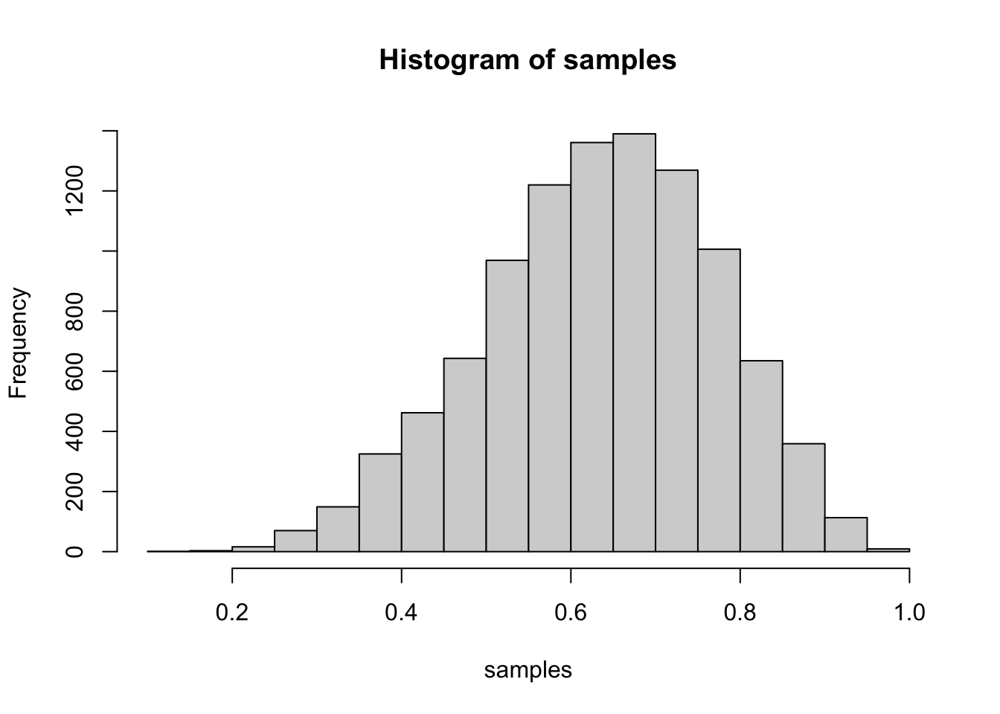
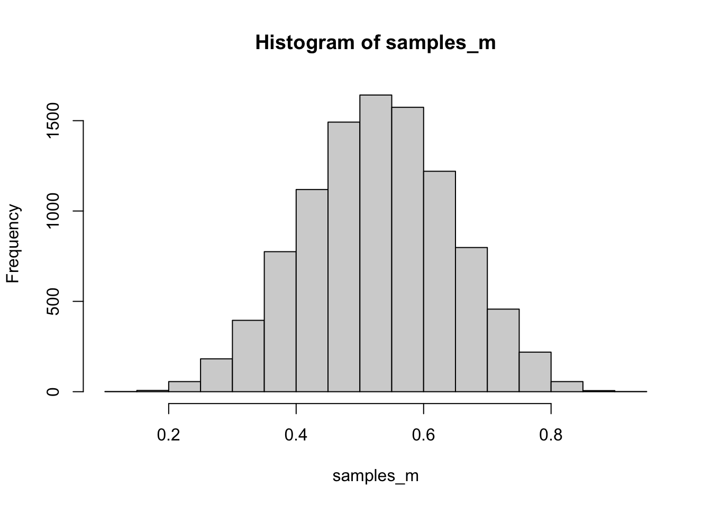
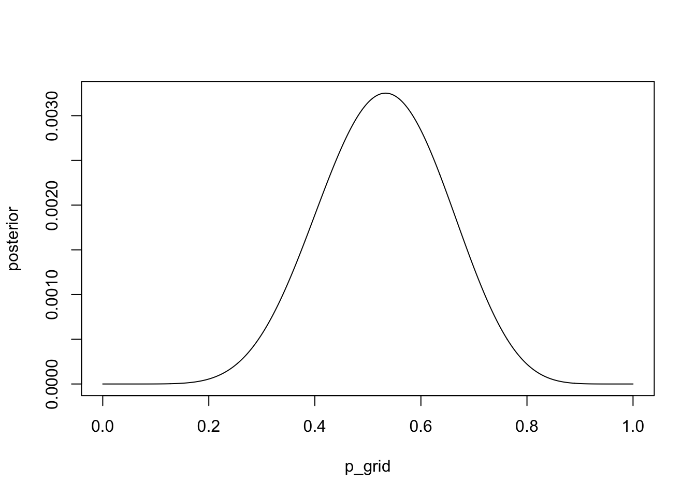

options(scipen=999)2 Sampling the Imaginary
Chapter 3
Also following Solomon Kurz’s E-book.
pacman::p_load(
tidyverse,
brm,
rethinking,
knitr,
kableExtra
)2.1 Thinking in probabilities vs. frequencies
- let’s say there’s a blood test that detects vampirism 95% of the time
- so Pr(positive test result|vampire) = 0.95
- there is also an error rate, in that it makes falsep ositive 1% of the time
- so Pr(positive test result|mortal) = 0.01
- also, vampires are rare, comprising of only 0.1% of the population
- Pr(vampire) = 0.001
- using Bayes’ theorem to find the probability of correctly identifying a vampire with this test (Pr(vampire|position)), we use Equation \(\ref{eq-vampire-positive}\)
\[ \text{Pr(vampire|positive)} = \frac{\text{Pr(positive|vampire) Pr(vampire)}}{\text{Pr(positive)}} \label{eq-vampire-positive} \]
- we can compute this using these known probabilities
| pr_positive_vampire | 0.950 |
| pr_positive_mortal | 0.010 |
| pr_vampire | 0.001 |
| pr_positive | 0.011 |
| pr_vampire_positive | 0.087 |
- or to look at observed frequencies
| pr_vampire | 0.001 |
| pr_positive_vampire | 0.950 |
| pr_positive_mortal | 0.001 |
| pr_positive | 1094.000 |
| pr_vampire_positive | 0.087 |
- McElreath points out that most people find it more intuitive to think about counts, rather than p;ugging probabilities into the right place in Bayes’ theorem, which is often called the frequency format or natural frequencies
Working with samples transforms a problem in calculus into a problem in data summary, into a frequency format problem. - p. 51
2.2 Sampling from a grid-like approximate posterior
2.3 Sapling to summarise
2.4 Sampling to simulate prediction
2.5 Summary
2.6 Terms and concepts
| term/function | definition |
|---|---|
| `rbinom(n, size, prob)` | |
| `PI(distribution, prob)` | rethinking package: compute percentile compatiability interval from posterior |
| `HPDI(distribution, prob)` | produces interval that best representats the parameter values most consistent with the data |
2.7 Practice
2.7.1 Easy
The Easy problems use the samples from the posterior distribution for the globe tossing example. This code will give you a specific set of samples, so that you can check your answers exactly…Use the values in samples to answer the questions that follow. - p. 68
# R code 3.27
p_grid <- seq( from=0 , to=1 , length.out=1000 )
prior <- rep( 1 , 1000 )
likelihood <- dbinom( 6 , size=9 , prob=p_grid )
posterior <- likelihood * prior
posterior <- posterior / sum(posterior)
set.seed(100)
samples <- sample( p_grid , prob=posterior , size=1e4 , replace=TRUE )hist(samples)
2.7.1.1 Easy 1
How much posterior probability lies below p = 0.2?
length(samples[samples < 0.2])/length(samples)[1] 0.0004# or
sum(samples < .2)/length(samples)[1] 0.00042.7.1.2 Easy 2
How much posterior probability lies above p = 0.8?
sum(samples > .8)/length(samples)[1] 0.11162.7.1.3 Easy 3
How much posterior probability lies between p = 0.2 and p = 0.8?
sum(samples < 0.8 & samples > 0.2)/length(samples)[1] 0.8882.7.1.4 Easy 4
20% of the posterior probability lies below which value of p?
quantile(samples, .2) 20%
0.5185185 2.7.1.5 Easy 5
20% of the posterior probability lies above which value of p?
quantile(samples, .8) 80%
0.7557558 2.7.1.6 Easy 6
Which values of p contain the narrowest interval equal to 66% of the posterior probability?
I used the rethinking::PI() function, which is wrong:
PI(samples, prob = .66) 17% 83%
0.5025025 0.7697698 Should’ve used the rethinking::HDPI function, because we wanted the highest posterior density interval.
HPDI(samples, prob = .66) |0.66 0.66|
0.5085085 0.7737738 pacman::p_load(tidybayes)
tidybayes::mode_hdi(samples, .width = .66) y ymin ymax .width .point .interval
1 0.6559935 0.5205205 0.7877878 0.66 mode hdi2.7.1.7 Easy 7
Which values of p contain 66% of the posterior probability, assuming equal posterior probability both below and above the interval?
I used the rethinking::HDPI() function, which is wrong:
HPDI(samples, prob = .66) |0.66 0.66|
0.5085085 0.7737738 I should’ve used the rethinking::PI() function, because e wanted the conventional percentile interval.
PI(samples, prob = .66) 17% 83%
0.5025025 0.7697698 2.7.2 Medium
2.7.2.1 Medium 1
3M1. Suppose the globe tossing data had turned out to be 8 water in 15 tosses. Construct the posterior distribution, using grid approximation. Use the same flat prior as before.
# R code 3.27
p_grid <- seq( from=0 , to=1 , length.out=1000 )
prior <- rep( 1 , 1000 )
likelihood <- dbinom( 8 , size=15 , prob=p_grid )
posterior <- likelihood * prior
posterior <- posterior / sum(posterior)
set.seed(100)
samples_m <- sample( p_grid , prob=posterior , size=1e4 , replace=TRUE )hist(samples_m)
Correct, but McElreath uses this plot:
plot(posterior ~ p_grid, type = "l")
2.7.2.2 Medium 2
3M2. Draw 10,000 samples from the grid approximation from above. Then use the samples to calculate the 90% HPDI for p.
10000 samples is the same thing, no? 1e4 in scientific notation = 10000. I’ll re-run it, but since we’ve set our seed it shouldn’t be any different.
samples_10g <- sample( p_grid , prob=posterior , size=1e4 , replace=TRUE )And caldulate the 90% HPDI for p:
HPDI(samples_m, prob = .9) |0.9 0.9|
0.3343343 0.7217217 After checking teh answers, I was right, it is the same as above, it’s just that question M1 didn’t also ask me to draw the random samples.